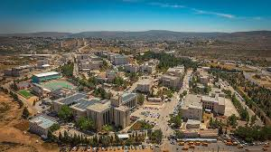

<html></html>
<body>


<h1> Farah Mahmoud AbuLebda </h1>

    <pre><h2>Summary 1:</h2><h3>I am a 4th year computer engineering student with passion for programming languages and design, skilled engineer with good experience in computer, structured and detail oriented professional with excellent mindset and strong project management, team and individual working capabilities.
        </h3></pre>

    <pre><h2>Address :</h2><h3>Birzeit-Ramallah</h3></pre>


<pre><h2>Birzeit:</h2><h3>BirZeit, is a Palestinian town north of Ramallah in the central West Bank.
Its population in the 2007 census was 4,529.Birzeit is the home to the Birzeit University.</h3></pre>

<pre><h2>Education :</h2><h3> •BA in Computer Engineering 
            Birzeit University                                                                        2017-2022</h3> </pre>


        </body>